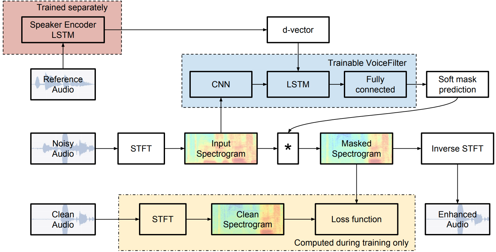

News:
Paper: arXiv
Authors: Quan Wang *, Hannah Muckenhirn *, Kevin Wilson, Prashant Sridhar, Zelin Wu, John Hershey, Rif A. Saurous, Ron J. Weiss, Ye Jia, Ignacio Lopez Moreno. (*: Equal contribution.)
Abstract: In this paper, we present a novel system that separates the voice of a target speaker from multi-speaker signals, by making use of a reference signal from the target speaker. We achieve this by training two separate neural networks: (1) A speaker recognition network that produces speaker-discriminative embeddings; (2) A spectrogram masking network that takes both noisy spectrogram and speaker embedding as input, and produces a mask. Our system significantly reduces the speech recognition WER on multi-speaker signals, with minimal WER degradation on single-speaker signals.
System architecture:

Lectures:
Video demos:
Citation:
@inproceedings{Wang2019,
author={Quan Wang and Hannah Muckenhirn and Kevin Wilson and Prashant Sridhar and Zelin Wu and John R. Hershey and
Rif A. Saurous and Ron J. Weiss and Ye Jia and Ignacio Lopez Moreno},
title={{VoiceFilter: Targeted Voice Separation by Speaker-Conditioned Spectrogram Masking}},
year=2019,
booktitle={Proc. Interspeech 2019},
pages={2728--2732},
doi={10.21437/Interspeech.2019-1101},
url={http://dx.doi.org/10.21437/Interspeech.2019-1101}
}
VoiceFilter model: CNN + bi-LSTM + fully connected
Meaning of the columns in the table below:
| Noisy audio input | Enhanced audio output | Reference audio for d-vector | Clean audio (ground truth) |
|---|---|---|---|
Meaning of the columns in the table below:
| Clean audio input | Enhanced audio output | Reference audio for d-vector |
|---|---|---|
Unfortunately, the original VoiceFilter system heavily depends on Google's internal infrastructure and data, thus cannot be open sourced.
However, thanks for the efforts by Seungwon Park, a third-party unofficial implementation using PyTorch is available on GitHub:
https://github.com/mindslab-ai/voicefilter
Please note that we are not responsible for the correctness or quality of third-party implementations. Please use your own judgement to decide whether you want to use these implementations.
No. The high SDR is because of the way we prepare our training data - we trim the noisy audio to be the same length as the clean audio for training.
For example, if the clean audio is 5 seconds, the interference audio is 1 second, then the resulting noisy audio will consist of 1 second of really noisy audio, and 4 seconds of actually clean audio. Thus a big part of our "noisy" audios are actually clean, and when we compute the SDR statistically, we get very large numbers (especially the mean).
However, since we use the same volume for clean and interference audios, if we only look at the really noisy parts of the noisy audio, the theoretical SDR should be 0.
So the conclusion: We are NOT solving a problem which is easier than others.
For training and evaluating our VoiceFilter models, we had been using the VCTK and LibriSpeech datasets.
Here we provide the division of training-vs-testing as CSV files. Each line of the CSV files is a tuple of three utterance IDs:
(clean utterance, utterance for computing d-vector, interference utterance)